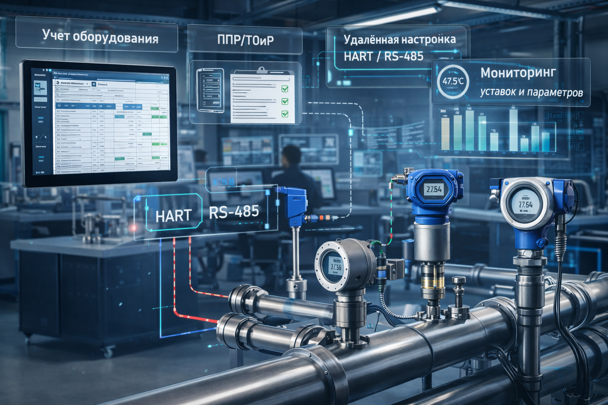

В рамках XIV Петербургского международного газового форума на стенде ООО «Газпром добыча Астрахань» была продемонстрирована инновационная разработка компании «Сатурн Индастрис» — система диагностики состояния средств и систем автоматизации ПАК «Астра КИП». Она представляет собой программно-аппаратный диагностический комплекс с визуализацией параметров оборудования автоматизации способом дополненной реальности (AR-интерфейса).

AR-интерфейс и визуализация данных
Опция дополненной реальности реализуется в виде специальных очков, позволяющих отображать данные в 2D/3D-формате с привязкой к физическому объекту. Система обеспечивает автоматическое определение типа и модели средства автоматизации при наведении зрительной зоны очков, допуская использование вспомогательной информации, например QR-кодов.
В зоне дополненной реальности отображается:
До трёх измеряемых прибором величин (расход, давление, температура) в виде абсолютного значения и графика
Серийный номер, модель, производитель, статус, даты технического и метрологического обслуживания, границы шкал
Цветовая индикация при выходе за допустимые пределы
Статистика отказов прибора
Технологическая платформа
Система является российским программным обеспечением, работающим под управлением операционной системы Linux, включая российские дистрибутивы, и полностью соответствует требованиям к отечественному ПО. Она построена на микросервисной архитектуре и ПО с открытым исходным кодом.
«Астра КИП» позволяет не только формировать и автоматически актуализировать базу данных оборудования, но и управлять процессами ТОиР, метрологического обслуживания, а также выполнять постоянный сбор данных с интеллектуальных КИП об их состоянии и возникающих неисправностях. Кроме того, она даёт возможность проводить удалённую диагностику и настройку приборов КИП.
Подключение и сбор данных
Система может подключаться к датчикам по протоколу HART или другим промышленным протоколам с возможностью передачи данных как по промышленным каналам связи Ethernet, так и с использованием беспроводных решений на базе LoRaWAN. Сервер ПАК «Астра КИП» производит обнаружение датчиков через опрос HART-мультиплексоров либо по протоколу TCP/IP через устройства преобразования сигнала.
Применение технологии LoRa и протокола LoRaWAN позволяет организовать эффективное решение для масштабируемых, энергоэффективных и надёжных систем дистанционного мониторинга в условиях добывающего производства, где критически важным является оперативный сбор данных с контрольно-измерительных приборов на обширных и труднодоступных территориях.
Интеграция с АСУ ТП
За счёт интеграции с АСУ ТП система обеспечивает:
Формирование подсистемы поддержки принятия решений в части надёжности и отказоустойчивости средств автоматизации
Оповещение АСУ ТП о важных событиях, связанных с состоянием датчиков, и вывод дополнительной диагностической информации
Получение из АСУ ТП информации о состоянии датчиков, подключённых по протоколу NAMUR
Возможности системы
- Формирование цифрового паспорта технологического оборудования, включая средства автоматизации и оборудование энергетики
- Сбор и обработка технологической и служебной информации по каждому средству измерений
- Предоставление персоналу оперативного, интуитивно понятного доступа к данным приборов учёта непосредственно в поле зрения
- Минимизация необходимости физического взаимодействия с приборами или стационарными терминалами
- Повышение эффективности мониторинга, диагностики и технического обслуживания
- Подготовка отчётной документации по техническому обслуживанию и ремонту оборудования
- Проведение административно-производственного контроля технологического оборудования на опасных производственных объектах
- Гибкая интеграция со смежными информационными системами и расчёт обобщённых показателей надёжности оборудования
Фотогалерея
Фотографии с XIV Петербургского международного газового форума и демонстрации системы «Астра КИП»